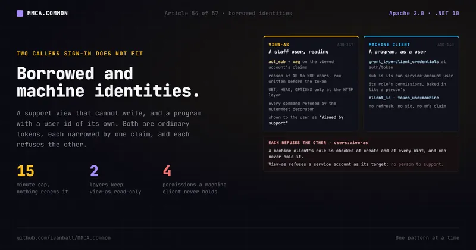

Auth & the edge · No. 54
Borrowed and Machine Identities: Read-Only View-As and OAuth Client Credentials

Every token in a framework built around interactive sign-in names a person who just proved who they are. Two callers do not fit that shape: a support user who needs to see one account's screen, and a program that needs to call an API with nobody at the keyboard. Here is how MMCA.Common mints both as ordinary tokens, bounds what each can do with a claim, a middleware step and a decorator, and makes each one refuse the other.
A user writes in: "my schedule page is empty." The support engineer opens the same page and it is full. The two of them spend twenty minutes on screenshots, because the engineer cannot see what the user sees without the user's password, and the user should never send it.
A month later a partner asks for a nightly export. Every token-issuing path in the framework is an interactive sign-in, and access tokens last 15 minutes, so the fastest available answer is to paste a person's token into a cron job. It works until the next morning.
Both requests end in the same place if you are careless: a token that says "this is user 4182" when it is not. The support view writes a preference change in the user's name, and the audit trail records the user doing something they never did. The program's token carries an administrator's role because that was the account somebody had to hand, and it can do anything an administrator can, at 3 a.m., from a server nobody watches.
This article is about the two identities MMCA.Common mints outside interactive sign-in. ADR-137 is the borrowed one: a read-only, reasoned, 15-minute view of another account that the account holder can see. ADR-140 is the machine one: the OAuth 2.0 client credentials grant, backed by a service-account user whose role is the whole of its authority. They share a design rule. Each produces a token every service already knows how to validate, and each carries a claim that the rest of the system reads to narrow what the token may do.
The series has covered the pieces both plug into. Article 16 covers how
every service validates the same tokens through JWKS, and the service tokens services attach to each
other's calls. Article 52 covers the user and role administration
controllers the view-as grant action lives on, and the mfa claim whose absence matters below.
Why it matters
Rubric §11 (Security) asks that authentication be centralized, that authorization be enforced at the right layer rather than in the UI, and that permissions follow least privilege. Both callers in this article are the usual places those properties break. Support access is where teams ship a "log in as" button that writes, and machine access is where they ship a long-lived API key with an administrator behind it. A framework that owns sign-in for several apps has to answer both, or each app answers them alone.
The MMCA answer, part one: view-as is a token that cannot write
The grant is a permission, a reason and a row. POST {userId}/view-as on
UsersAdminControllerBase requires users:view-as (AdministrationPermissions.ViewAsUsers) on top of
the class-level users:manage, and takes a reason of 10 to 500 characters
(ViewAsGrant.ReasonMinLength and ReasonMaxLength). ViewAsService.StartAsync validates the reason
and refuses the caller's own account before any lookup, then refuses a missing or deleted account, a
machine client's service account, a locked account, and any account whose role itself holds
users:view-as, so staff cannot view each other. A host that enabled view-as but registered no
IViewAsSubjectResolver refuses every grant with ViewAs.NotConfigured.
The ViewAsGrant row is written before the token is minted, so no token exists without its audit
record, and each new grant sweeps rows older than ViewAs:RetentionDays (default 90, [Range(1, 3650)]) instead of running a hosted service in every process.
The token is minted by the raw signer. ViewAsService calls
ITokenService.GenerateShortLivedAccessToken directly, not the session-stamping wrapper the sign-in
workflow uses, so the token carries no sid and no mfa claim and opens no refresh session. It
carries the viewed account's standard claims plus two more: act_sub, the staff user, and vag, the
grant id (AuthClaimTypes.ViewAsActor and AuthClaimTypes.ViewAsGrant). Its lifetime is the smaller
of 15 minutes (ViewAsGrant.MaxLifetime) and the configured access-token lifetime. Nothing renews it.
Presence of act_sub makes the request read-only, enforced twice. The two layers exist because
the writes live in two places. Several writes never pass through a command handler at all (sign-in,
refresh, password and preference changes, device registration), so a check in the CQRS pipeline
alone would leave them open; and a command can be reached from a GET handler or a hub method, so a
check on the HTTP method alone would leave those open.
The HTTP layer is ViewAsGuardMiddleware, the ViewAsGuard step of the shared pipeline, added
whether or not view-as is enabled. A request without act_sub passes after one claim lookup. For a
view-as request the guard answers in order:
- While
ViewAs:Enabledis false (it defaults to false), 401, so a token minted before the switch was turned off reaches nothing. - Any method other than GET, HEAD or OPTIONS, 403, unless it is a POST to the one action marked as
the end-view endpoint or to an endpoint the host marked
ViewAsReadOnlyEndpointAttribute(gRPC is always POST). - The grant must still be live, else 401. On the host that holds the grant store this is one uncached primary-key read per view-as request, because a cached "live" answer on one replica would outlive an End handled on another. On a service without the store it is the token's own expiry plus a grant-ended marker in the shared cache.
Every failure on that path is a refusal. A store error, a missing IViewAsService, a missing cache or
an unreadable cache all answer 401. That is a deliberate contrast with SoftDeletedUserMiddleware,
which fails open, and the remarks on the class give the reason: the exposure here is one staff user's
support session, so an outage costs a support view, never a write in someone else's name.
The command layer is ViewAsCommandDecorator, registered last with TryDecorate so it runs first:
the outermost decorator of the standard command pipeline, wrapped only by the optional MiniProfiler
decorator that AddApplicationProfiling adds when UseMiniProfiler is on. While the caller carries act_sub it returns Auth.ViewAsReadOnly
(Forbidden) and the command does no feature-flag lookup, permission check, logging, validation or
transaction work. Queries carry no view-as decorator.
The browser never holds the token, and the staff user's own session survives. On a web host
behind the same-origin proxy, a successful grant writes a separate HttpOnly overlay cookie,
mmca_view_as (ViewAsOverlayCookie.Name), whose Max-Age is the token's remaining life. While it
is live its token replaces the session bearer for forwarded calls except sign-in and sign-out; it is
deleted on end, sign-out, a successful sign-in, expiry, or an upstream 401. The staff user's session
cookies are never touched, so ending the view lands them back in their own account. MAUI heads do not
offer view-as.
The account holder can tell. The grant row is the audit record and the user-visible record at
once: the viewed user's sign-in history merges each grant as a "Viewed by support" row, and a support
access log (ViewAsGrantsAdminControllerBase plus the routeless SupportAccessLog component) answers
who viewed whom, why, when and how it ended. One write serves the operator and the account holder, so
the two cannot disagree.
The MMCA answer, part two: a machine client is a service-account user
The decision that makes everything else cheap: a program gets a user id. Audit stamps, ownership
rules and the per-user rate-limit partition all key on the token's integer sub. A separate client
principal type would need a second id space in each of them, and a client id would collide with a
user id. So each machine client is backed one to one by its own service-account user, created by the
consumer's IServiceAccountProvisioner over the app's own user aggregate, because MMCA.Common owns no
user table. IAuthUser.IsServiceAccount is a defaulted member, so an app that never adopts machine
clients implements nothing.
The token endpoint is a base of its own. MachineTokenControllerBase is an abstract controller
whose sealed subclass in the app routes it at auth/token. Its one action is a POST that is
[AllowAnonymous] (the secret is the credential), throttled by the auth-ip rate-limit policy as login
is, marked [NonIdempotent] so the replay cache never holds a bearer token at rest, and form-encoded
with grant_type=client_credentials. The client authenticates with HTTP Basic or with client_id and
client_secret form fields. The response is RFC 6749 on the wire, not Problem Details: access_token,
token_type and expires_in, or invalid_client (401, with a WWW-Authenticate: Basic header),
unsupported_grant_type or invalid_request (400), every answer carrying Cache-Control: no-store.
While machine clients are off the action answers 404, so a consumer can inherit the base before it
turns the feature on. Putting the action on AuthControllerBase instead would have changed every
consumer's committed OpenAPI documents for a feature none of them had enabled.
The token is person-shaped. MachineClientService.IssueTokenAsync checks the grant type, finds the
client and checks its secret, then reads the service account through the provisioner on every
mint, so a deleted or locked account stops the client at once. It mints through the same raw
GenerateShortLivedAccessToken view-as uses, adding client_id and token_use=machine
(AuthClaimTypes.ClientId, TokenUse, TokenUseMachine). The sub is the service account and the
permission claims are its role's, baked in exactly as for a person. It carries no refresh token, no
sid, no auth_time and no mfa, so a use case that requires a second factor refuses it with no
special case. MachineClients:AccessTokenMinutes defaults to 15 and is validated from 1 to 15.
Revocation reuses a marker every service already reads. RevokeAsync saves the row's
RevokedOn first, so no new token is minted, then writes the soft-deleted-user marker for the service
account, sized by SoftDeletedUserCache.MarkerDurationFor to the longer of the machine token's
lifetime and the host's access-token lifetime. Every service's SoftDeletedUserMiddleware then
answers 401 to the tokens the client already holds. The 15-minute cap is what keeps a token from
outliving the marker that is meant to stop it.
Turning it on is two switches and a class. MachineClients:Enabled defaults to false, and an
enabled host needs both the AddMachineClients call and its own IServiceAccountProvisioner; ADR-140
records a settings validator and a startup tripwire that fail each half-configuration.
How each refuses the other
The two features meet at one permission, users:view-as, and the refusal runs in both directions.
A machine client can never hold users:view-as. MachineClientService keeps four forbidden
permissions, users:view-as, users:manage, roles:manage and clients:manage, and checks the
backing role against them at create (before the service account is provisioned, so a refused create
leaves no orphan) and again at every mint, because a role can gain a permission after the client
exists. A program holding users:view-as could read as any user; that power is reserved for a named
staff member giving a reason. The other three are the escalation paths: administering people,
granting its own role anything, and minting further clients for itself.
View-as can never borrow a machine identity. ViewAsService refuses a service account as a target
with ViewAs.TargetIsServiceAccount (Forbidden): there is no person behind it to support.
And view-as refuses its own holders. The same role check that keeps users:view-as off a machine
client keeps it off a view target: an account whose role holds it answers ViewAs.TargetIsStaff. No
lateral access between staff, and no chain from one borrowed identity to another, because a grant
request made under a view-as token is a POST the guard refuses.
Endpoints where a person takes part refuse machines outright. A machine client holds what its
role holds, so an endpoint that asks only for a signed-in caller (casting a vote, saving a bookmark,
checking in) is open to every machine client whatever its role. [RefuseMachineClients] is an
authorization filter that answers 403 with MachineClients.EndpointRefused to any request carrying
token_use=machine and leaves every other caller to [Authorize] and the permission attributes.
Declared on a controller it covers every action, permission-gated ones included.
// Illustrative of the documented shape: the two narrowing claims and where each is read.
// Condensed from ViewAsGuardMiddleware, ViewAsCommandDecorator, MachineClientService and
// RefuseMachineClientsAttribute; logging, ConfigureAwait and the no-store path are dropped.
// 1. The HTTP layer: a view-as request may only read, and only while its grant is live.
public async Task InvokeAsync(HttpContext context, ILogger<ViewAsGuardMiddleware> logger)
{
if (!context.User.IsViewAs()) { await next(context); return; } // one claim lookup
var settings = context.RequestServices?.GetService<IOptions<ViewAsSettings>>()?.Value;
if (settings is null || !settings.Enabled) { context.Response.StatusCode = 401; return; }
if (!IsSafeMethod(context.Request.Method) && !IsEndViewAsEndpoint(context) && !IsReadOnlyEndpoint(context))
{ context.Response.StatusCode = 403; return; }
if (!await IsGrantLiveOnThisHostAsync(context, settings.HostsGrantStore, logger))
{ context.Response.StatusCode = 401; return; } // store error = refused
await next(context);
}
// 2. The command layer: outermost decorator of the standard pipeline, so a refused command does no other work.
public async Task<TResult> HandleAsync(TCommand command, CancellationToken cancellationToken = default)
{
if (!currentUser.User.IsViewAs())
return await inner.HandleAsync(command, cancellationToken);
return CreateFailure()([Error.Forbidden("Auth.ViewAsReadOnly", "Viewing as another user is read-only.")]);
}
// 3. The machine mint: the account and its role are re-read every time.
var account = await provisioner.FindAsync(client.ServiceAccountUserId, cancellationToken);
if (account is null || account.UserId != client.ServiceAccountUserId || IsForbiddenRole(account.Role))
return invalidClient; // users:view-as among the four
var token = tokenService.GenerateShortLivedAccessToken(
account.UserId, account.Email, account.Role, account.Name,
[new(AuthClaimTypes.ClientId, client.Id.ToString()),
new(AuthClaimTypes.TokenUse, AuthClaimTypes.TokenUseMachine)],
TimeSpan.FromMinutes(settings.Value.AccessTokenMinutes));
// 4. The participation guard: a person must be at the keyboard.
public void OnAuthorization(AuthorizationFilterContext context)
{
if (context.HttpContext.User.HasClaim(AuthClaimTypes.TokenUse, AuthClaimTypes.TokenUseMachine))
context.Result = Refusal(context.HttpContext); // 403 MachineClients.EndpointRefused
}Where the two stand in a deployed app
MMCA.ADC is the one consumer that enables either, and the two are in different states.
View-as is switched on in ADC. All four service hosts set ViewAs:Enabled true in their base
appsettings.json; Identity keeps the default HostsGrantStore and holds the grant table, while
Conference, Engagement and Notification set HostsGrantStore false and read the grant-ended marker
from the shared Redis cache. ADC registers its own IViewAsSubjectResolver over its User
aggregate, grants users:view-as in its Identity permission grants, places ViewAsButton on its
organizer user detail page, and routes the support access log as AdminViewAsGrantsController with a
SupportAccess page.
Machine clients ship switched off in ADC production. The Identity service calls
AddMachineClients and implements the provisioner, but its base appsettings.json sets
MachineClients:Enabled false with AccessTokenMinutes 15, so auth/token and every
Admin/MachineClients route answer 404 there. Only local development turns it on, through
appsettings.Development.json and the AppHost's MachineClients__Enabled. Eight participation
controllers declare [RefuseMachineClients] anyway (six in Engagement, two in Conference), so the
refusal is in place before the feature is.
Trade-offs, honestly
- One primary-key read per view-as request, and failing closed. Only view-as requests pay it; an ordinary request pays one claim lookup in the middleware and one in the decorator. An outage of the grant store or the shared cache ends every live support view. That is the intended direction, and it is still an outage.
- A page that writes on GET does not render for a viewer. The method rule and the decorator refuse it with 403. That is correct and occasionally surprising.
- The view is of standard claims only. The token is minted from
ViewAsSubject(subject, email, role, display name and the role's permissions). A claim an app adds through its own sign-in path is not reproduced, so a page that depends on one can render differently for the viewer. ViewAsReadOnlyEndpointAttributeis an assertion nobody checks. A host that marks a gRPC method read-only is promising it performs no write; the command decorator still refuses a command however it was reached, but a write that bypasses commands would pass.- A multi-service host needs one shared cache. With a cache per service, a view ended on Identity keeps working on the others until its token expires: at most 15 minutes, still read-only.
- A machine identity is a user row. It shows up wherever the app lists users unless the app
filters on
IsServiceAccount. - Machine revocation is as fast as the soft-deleted check, and that check fails open. Outstanding
tokens are refused within the marker's window, not instantly, and
SoftDeletedUserMiddlewarelets a request through on a cache or validator error. The 15-minute token cap bounds the worst case. - No refresh token for programs. A program asks for a new token when one expires, one request per quarter hour per program at the default. A refresh token would be a second long-lived credential beside the secret it already holds.
[RefuseMachineClients]is opt-in per endpoint. The framework refuses only the four escalation permissions; deciding which endpoints need a person is the app's job, and declared at class level the attribute also refuses a machine client on the organizer actions inside those controllers.- Creating a machine client asks for no recent interactive sign-in. ADR-140 lists step-up at client creation as a precondition for turning the feature on in production, which is one reason it stays off in ADC.
Apply this even without MMCA
- Mint borrowed and machine identities as ordinary tokens. If every service already validates one token format, a support view and a program should arrive in that format, so no service grows a second validation path.
- Mark the borrowed token with a claim whose presence narrows it.
act_subpresent means read-only everywhere; nothing has to remember to check a flag that defaults to "write". - Enforce read-only at both places writes live. The HTTP method catches the writes that never become commands; a command decorator at the front of the pipeline catches the commands reached from a read.
- Write the audit row before the token, and show it to the account holder. Access only an operator can see is access the user takes on trust.
- Fail closed where the exposure is small. A support view that cannot prove its grant is live should stop, because the cost is one support session.
- Give a program a user id, not a new kind of principal. Audit, ownership and rate limiting all keep working when the caller is a row in the same table.
- Re-check the backing role at every mint. A role can gain a permission after the credential was issued; a check at creation alone is a check that expires.
- Name the permissions that can never back a program. Impersonation and the three escalation paths (managing users, managing roles, minting clients) belong to people.
- Let an endpoint say a person must be present. A role grants capabilities; it cannot express "this vote must be cast by a human". An attribute on the endpoint can.
The rule of thumb: a token that does not belong to the person at the keyboard should carry a claim that says so, and every layer that can write should read it.
What we covered: why a support view and a program both end in a token that names somebody else,
how view-as mints a 15-minute, unrenewed token carrying act_sub and vag behind a permission, a
reason and an audit row written first, how ViewAsGuardMiddleware and the outermost
ViewAsCommandDecorator enforce read-only where the two kinds of write live, how the mmca_view_as
overlay cookie keeps the staff user's own session intact, how MachineTokenControllerBase serves the
client credentials grant at auth/token for a service-account user with no refresh, sid or mfa,
how four forbidden permissions and [RefuseMachineClients] bound a program's reach, how the
users:view-as role guard makes each feature refuse the other, and where MMCA.ADC stands on both.
Next in the series: Article 55, "Your App as an MCP Server: Read-Only Tools Over the Queries You Already Govern."
MMCA.Common is open source. Star the repo, read the 2-minute ADR-137 and ADR-140 behind these
patterns, or dotnet add package MMCA.Common.API and build the monolith you can extract later.
- Repo: https://github.com/ivanball/MMCA.Common
- This pattern's decision records: ADR-137: Read-Only View-As Support Access (Reasoned, 15 Minutes, Visible to the User) and ADR-140: Machine Clients Through OAuth Client Credentials Backed by Service Accounts
- The full 34-category scorecard, §11 included, lives in MMCA.Common: Architecture Scorecard in the docs site.
Previous: Article 53, "One Framework, Three Clouds: A Cloud-Neutral Core With Vendor Adapter Packages." Next: Article 55, "Your App as an MCP Server: Read-Only Tools Over the Queries You Already Govern."
Tags: .NET, C Sharp, Authentication, Security, OAuth